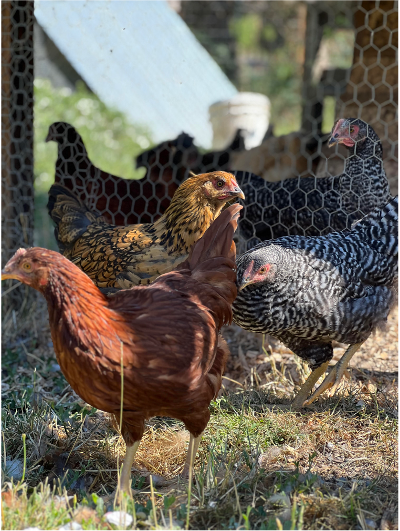

02:00
ST 314 - Course Intro
Download or print notes to PDF
If you’d like to export this presentation to a PDF, do the following
- Toggle into Print View using the E key.
- Open the in-browser print dialog (CTRL/CMD+P)
- Change the Destination to Save as PDF.
- Change the Layout to Landscape.
- Change the Margins to None.
- Enable the Background graphics option.
- Click Save.
This feature has been confirmed to work in Google Chrome and Firefox.
Welcome to ST 314: Intro to Statistics for Engineers
Erin Howard
erin.howard@oregonstate.edu
Erin Howard (she/her) 👩🏫


Introduce Yourself to Your Classmates 👋
- Name
- Major
- Year in school
- Something you did over the summer
- Your experience with learning or using statistics
Syllabus Overview 📄
You are required to read the syllabus on Canvas in its entirety.
Syllabus quiz on Canvas due tomorrow at 11:59 pm.
Communication 🗣️
- Canvas Discussion Boards - please use the discussion boards for material and assignment related questions.
- Announcements - check Canvas regularly for announcements about assignments, course updates, etc. (I post announcements regularly!)
- Office hours - attend office hours to get help with class materials, assignments, exam studying, etc.
- Email - please only use email for personal matters (e.g. grades)
Required Course Materials 📚
R AND RStudio Statistical Software
R is a free open-source programming language.
RStudio is the integrated development environment (IDE) we’ll work in when using R.
Instructions for downloading both are posted in the Start Here module on Canvas.
- A smart phone, tablet, or laptop with you in class so that you can participate in class. Talk to me if you need assistance getting one of these things!
- FREE textbook: OpenIntro Statistics by David Diez, Mine Cetinkaya-Rundel, and Christopher Barr
Preparing for Class ✏️
Before attending our in-person meetings each week, you need to do the following:
Required: Read the assigned sections from OpenIntro Statistics (or other free resources linked on Canvas).
Required: Complete the week’s pre-lecture activity (due Mondays at 11:59 pm).
Recommended: take notes as you read and work on the pre-lecture activity
If you prefer a pre-formatted version of the material we’ll cover in class (e.g. slides, example problems), check the canvas module for those documents and download/print them before class.
There is an expectation that you will have completed all required readings and pre-lecture assignments before class.
Class Meetings 👥
- A portion of each class will be spent reviewing concepts from the readings and pre-lecture materials, as well as going over examples when applicable.
- Each class, time will also be set aside to complete the in-class activity.
- Your 2 lowest in-class activity grades will be dropped.
- On Thursdays, at the end of class you will complete and submit a Concept Quiz (more on the next slide).
- All lectures will be recorded and posted to Canvas. There is no option for remote attendance in this class.
- You are strongly encouraged to ask questions throughout class. No need to wait for a good stopping point or the end of class - the sooner you get your questions answered the better.
Concept Quizzes 📝
Thursdays, at the end of class…
A short quiz will be administered, on paper.
These quizzes are intended to encourage a deeper understanding of the conceptual aspects of the course material.
You will not be permitted to use any technology during these quizzes (i.e., no phones, tablets, laptops).
Concept quizzes will cover material from the previous two class periods (not the class period in which the quiz is given).
You should prepare for the concept quizzes by completing the required readings, answering and taking notes on pre-lecture activities, completing weekly problem sets, and asking questions.
If you miss a class period where a concept quiz was given, you must contact me by 5 pm that day so that we can schedule you to take the alternate version.
Weekly Problem Sets 💻
- For additional practice with the concepts covered each week, you’ll have a problem set to complete by Wednesday at 11:59 pm.
- Problem sets are completed in Canvas.
- Questions are graded for correctness.
- You will have three attempts on the problem sets.
- Collaboration is allowed and encouraged on these assignments, but all work must be your own.
Data Analyses 📈
- Weekly written assignments will be used to apply the material covered in class to real-world problems.
- Data Analyses are due every Thursday at 11:59 pm PT.
- Data Analyses will require the use of RStudio.
- Collaboration is allowed and encouraged on these assignments, but all work must be your own.
Data Analyses must be submitted in Gradescope.
- When submitting assignments, you must select the page numbers that correspond to each question. A detailed video on how to correctly submit assignments is available in the Start Here module on Canvas. Assignments that are not submitted correctly will be subject to a point deduction.
Late Policy ⏰
- Each student is granted two “no questions asked” 24-hour late submissions on outside of class assignments.
- Longer extensions may be granted for extenuating circumstances. Longer extensions are not guaranteed.
- You must submit a late assignment request form for any extension.
- In-class participation activities do not apply.
Generative AI Policy 🤖
The use of generative AI is strongly discouraged across all aspects of this course. Below is a list of instances where generative AI use is prohibited:
Use of generative AI is prohibited on exams and concept quizzes.
Use of generative AI is prohibited for writing. All written responses to questions on any assignment in this course must be your own writing.
Use of generative AI is prohibited in writing code. It’s common for people to use gen AI to help debug code, which I am not prohibiting in this course, but you cannot rely on large language models to write code from scratch for you.
Violations of the above policy will be considered acts of academic misconduct and handled as such.
Exams 📝
There will be two cumulative exams in this course:
Midterm Exam - November 4 during class (Tuesday of Week 6)
Final Exam - December 10 at 8 am (Wednesday of Finals Week)
- Exams will be open note; however, no devices are allowed. Any notes you wish to use during the exam must be on paper.
- More details will be discussed as we approach the exams.
Scheduling Notes 🗓️
We will not meet during our usual class time on the following days:
Thursday, November 6 - Erin out of town
Tuesday, November 11 - Veterans’ Day
Thursday, November 27 - Thanksgiving
Advice from Previous ST 314 Students
- “Show up and be active in every lecture”
- “Finding others to review with can be very useful in understanding the material and catching mistakes, making it much easier to succeed in the class.”
- “Work on the problems sets and data analyses sooner rather than later. This will reduce stress as you go on with the course.”
- “I would say to go to class everyday, as this class isn’t that hard if you do. Also go to office hours as soon as questions arise.”
- “Make sure you take good notes and attend as many office hours as you can.”
- “Every week I would do a quick overview to make sure I understand everything.”
Why Statistics? 📊
Spend the next two minutes discussing the following questions with one or two people around you.
What is the study of statistics?
Where have you seen statistics in your field?
Why is it important for engineers to understand and use statistics?
02:00